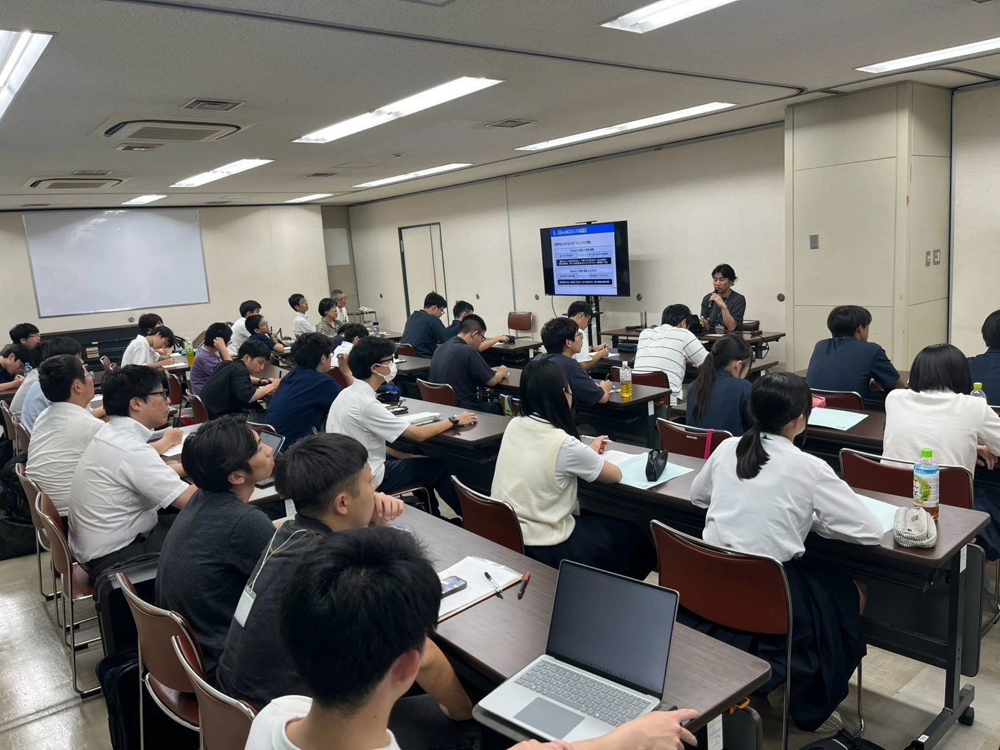
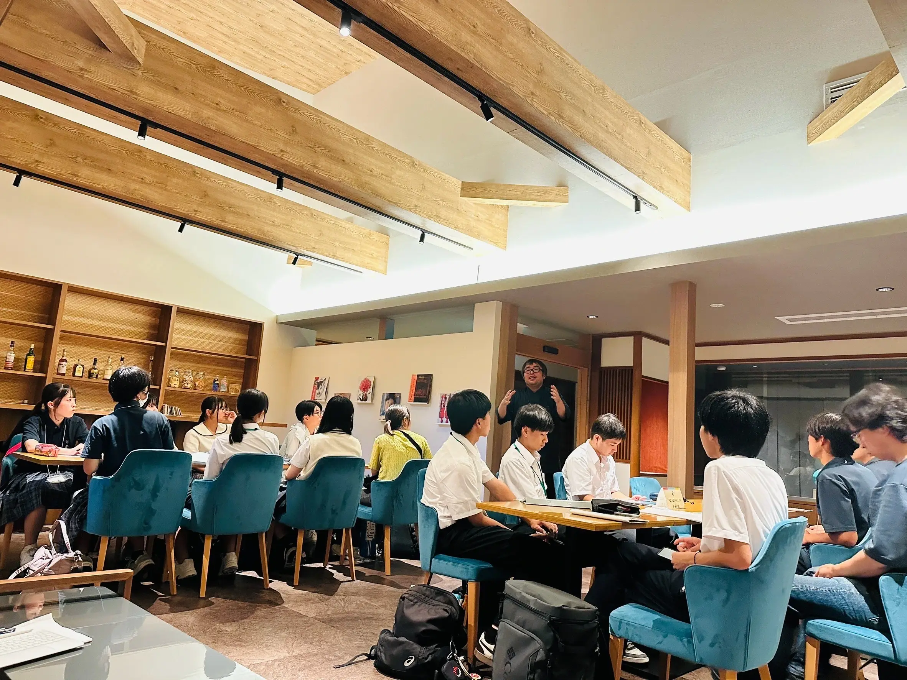
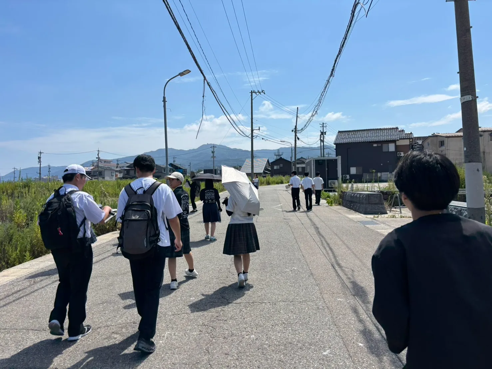
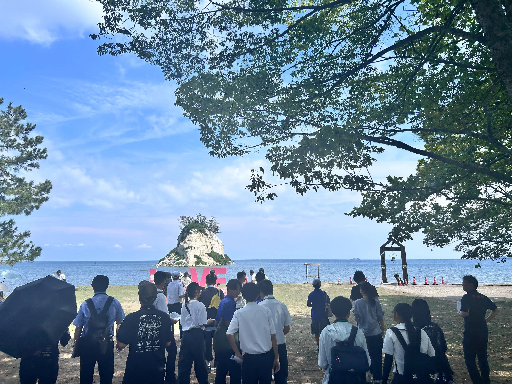
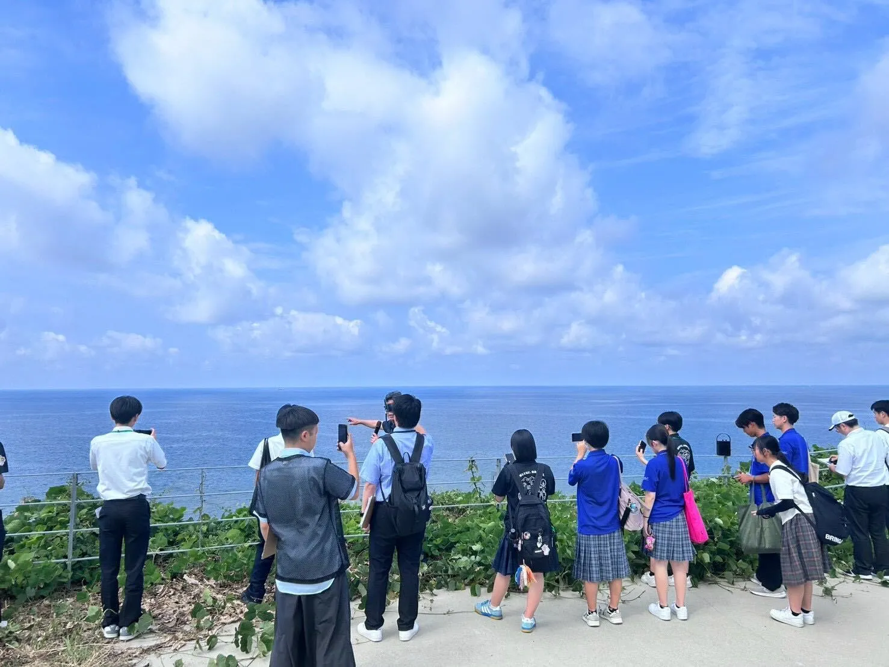
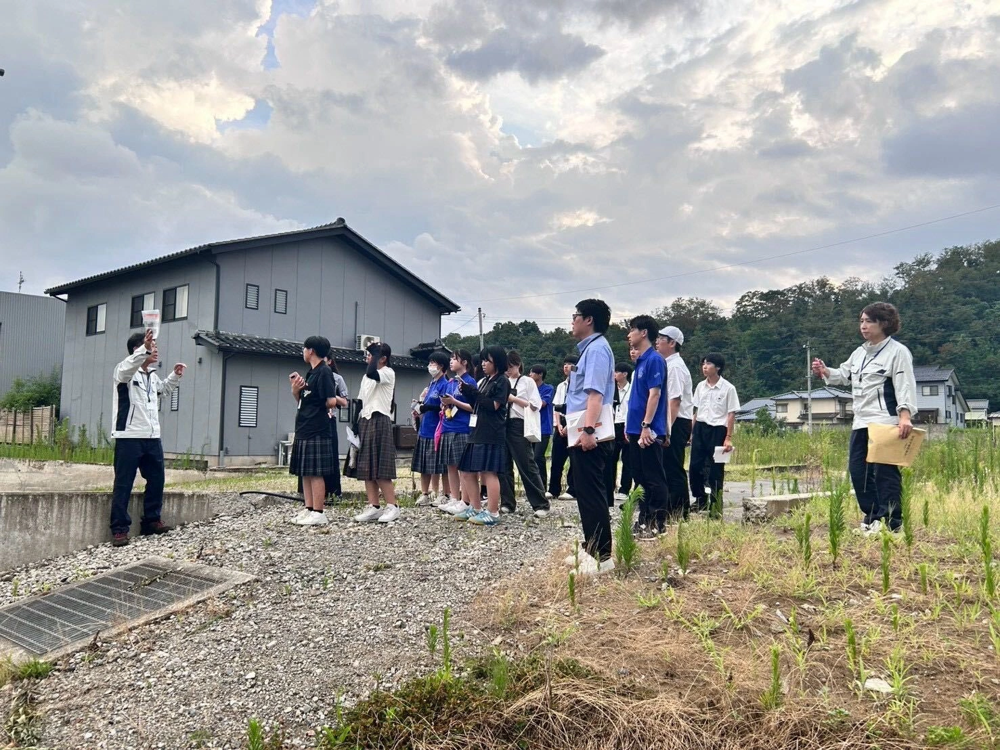
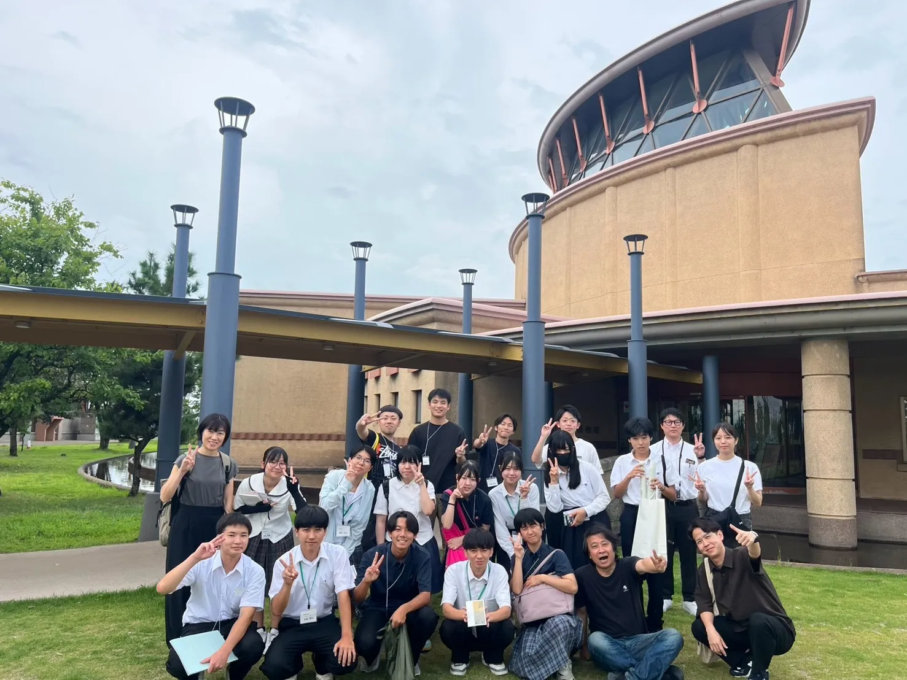

| 12:30-16:00 | 石川県小松市 | 小松市役所の訪問 |
|---|---|---|
| 17:30-19:00 | 石川県小松市 | 粟津温泉 喜多八 喜多様インタビュー・宿泊 |
| 10:20-12:00 | 石川県輪島市 | 旧朝市周辺・KABULET |
|---|---|---|
| 13:35-13:50 | 石川県珠洲市 | 見附島見学 |
| 13:50-14:40 | 石川県珠洲市 | 隆起状況・土砂崩落箇所現地見学 |
| 17:30-18:30 | 石川県内灘町 | 側方流動の被害 |
| 石川県金沢市 | 宿泊 |
| 9:00-10:30 | 富山県射水市 | 新湊博物館 |
|---|

二次避難者を支える切れ目のない支援
小松市役所では、能登半島地震における二次避難者の受入れと、その後の生活支援について伺いました。 旅館等での避難生活中には、社会福祉協議会による買い物などを支える「さわふれ号」が運行され、その後も みなし仮設住宅等への訪問・見守りや相談支援が続けられました。
避難先を確保して終わりではなく、次の住まいへの移行や地域の支援につなぐ切れ目のない 支援の重要性を知るとともに、手厚い支援と避難者自身の「生きる力」とのバランスについて考える機会 となりました。

二次避難者を支える旅館の取組
粟津温泉「喜多八」では、能登半島地震における二次避難者の受入れについて伺いました。 普段から合宿等の団体利用に対応してきた受入れ態勢や、地域の旅館支配人同士のネットワークを生かし、 旅館同士で連携しながら避難者の生活を支えていました。一方で、多くのボランティアやデマへの対応、 通常営業と避難者受入れの両立など、旅館ならではの難しさもあったといいます。 平時からの受入れ態勢や事業者同士のつながりが、災害時の柔軟な対応を支える基盤となることを学びました。

被害の実態を知り、備える重要性を学ぶ
地震・火災・津波といった複合災害に見舞われた輪島市中心街を見学しました。現在も道路の隆起や地割れの跡が残っており、延焼範囲と実際の街並みを見比べることで、 道路幅員などの都市構造と火災の広がりとの関係について理解を深めることができました。
昼食会場の「やぶかぶれ」では、普段からの地域での取り組みや連携が、そのまま災害時にも生かされたというお話を伺いました。日常のつながりや仕組みを災害前から築いておくことが、「事前復興」として重要であることを学びました。
最後に輪島朝市を訪れ、現地の方々と交流しました。被災後も人が集まる様子から、朝市が今も輪島と人々をつなぐ大切な場であることを実感しました。

変わりゆくシンボルの姿
見附島は、能登のシンボルとして有名で、島の形が軍艦に似ているところから「軍艦島」とも呼ばれ、 親しまれてきた場所です。しかし、能登半島地震によって大規模に崩落した ことで、その姿は変わり、もともとあった看板等も失われていました。 一方で、変化したその姿自体が、地震の状況や地形の変化を物語る存在となり、 今もなお人を引き付けているように感じました。

現地で具体化した、「孤立」と「地形」のイメージ
珠洲市大谷地区では、地盤隆起によって変化した海岸や港、土砂災害の爪痕が残る山の斜面を実際に 目にしたことで、「孤立」という言葉が示す状況を、現地の地形や暮らしと結びつけて捉えることができました。 また、孤立集落が発生した際の情報伝達や食料確保について、 高校生から出た疑問にも丁寧に回答いただき、災害時に地域が直面す る課題への理解がより深まりました。さらに、複合災害を経験し、 人口減少も進む珠洲市の現状を知ることで、災害は発生時の被害だ けでなく、その後の暮らしにも長期的な影響を及ぼすことを実感しました。

液状化被害から考える地盤災害と復興
内灘町では、能登半島地震による液状化被害について町役場の方からお話を 伺うとともに、砂丘周辺や砂丘地に造成された住宅地を歩いて被災状況を視察 しました。「ゆるい砂」と「高い地下水位」が重なることで液状化しやすい地盤が 形成され、傾斜地では液状化に伴う側方流動による被害が発生していました。 現在も地盤の隆起・沈下や住宅の傾き、公費解体によって住宅が撤去された場所など 、被害の痕跡が各所に残っていました。また、地盤そのものが移動したことで、 震災前後の土地の位置と地籍をどのように整理していくかが、復興を進める上での 課題となっていることを伺いました。建物の再建だけではなく、土地の境界や 権利関係の整理まで必要となる地盤災害の複雑さと、復興の難しさを現地で実感する機会と なりました。

水とともに築かれてきた地域と土木の歴史
新湊博物館では、射水市における治水や港湾整備など、地域と水との関わりの歴史について学びました。射水平野では、庄川などの河川や放生津潟の水を農業・漁業・舟運に利用する一方、洪水や排水不良にも悩まされてきました。そのため、江戸時代から堤防整備や「堀切」「江ざらい」などが行われ、 水を利用しながら制御する工夫が重ねられてきました。また、内川争論からは、農村の排水と町の舟運のように、 水をめぐって異なる利害を調整する必要があったことも分かりました。近代以降は庄川の河川改修や排水機場の整備、 富山新港の建設が進み、治水事業が災害を防ぐだけでなく、農業や産業、土地利用そのものを変えてきたことを学びま した。さらに、大洲農業高校の生徒が庄川と肱川を比較したことで、同じ河川でも地形や洪水到達までの時間によって必要な防災対策が異なることにも気づきました。現在の地域の姿を理解するためには、今ある施設だけを見るのではなく、過去の災害や土木事業、人々の暮らしや利害調整の歴史まで読み解くことが重要だと感じました。 また、明治三陸津波、昭和三陸津波、東日本大震災と3つの津波を伝える石碑もあり、石碑の記述から過去の災害の教訓を学びました。